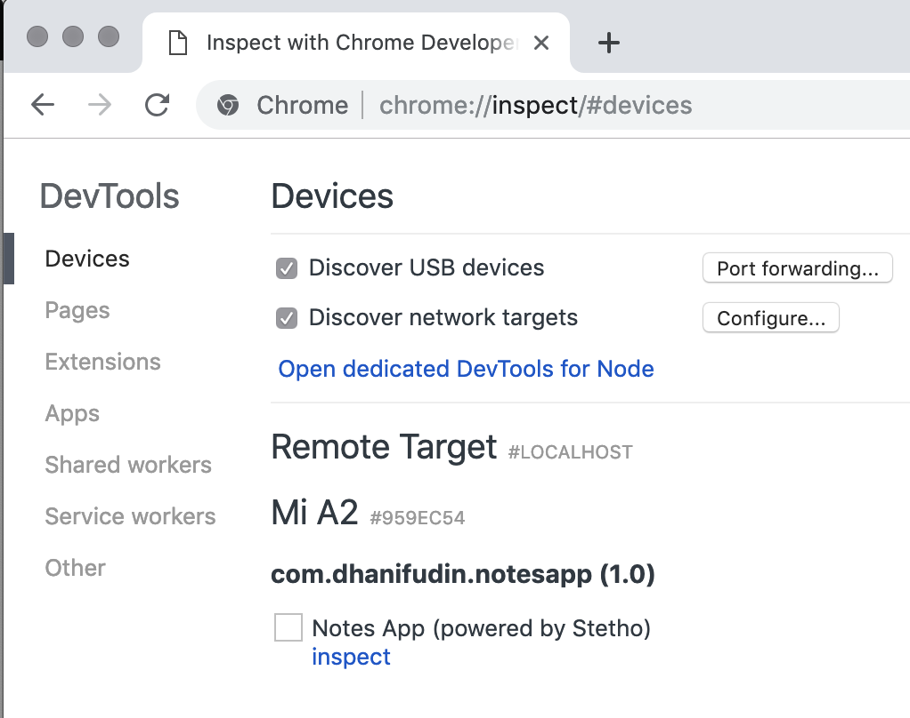

Menyiapkan Dependency
Untuk memudahkan mengembangkan android SQLite diperlukan beberapa dependencies tambahan. Pada percobaan berikut akan digunakan room persistence untuk menangani operasi-operasi database SQLite.
Bukalah file
build.gradledan tambahkan library dependency dari room persistence dan lifecycle.implementation 'android.arch.persistence.room:runtime:1.1.1' annotationProcessor 'android.arch.persistence.room:compiler:1.1.1' implementation 'android.arch.lifecycle:viewmodel:1.1.1' implementation 'android.arch.lifecycle:extensions:1.1.1'
Opsional
Note: Untuk memudahkan melihat isi data dalam SQLite, anda juga dapat menambahkan library
Stethodari facebook. Untuk melihat isi, anda dapat menggunakan Google Chrome dengan mengakseschrome://inspectdan pilih menu devices. Lakukan inspect remote target pada device yang tersedia dengan mengklik linkinspectpada list aplikasi yang muncul.

implementation 'com.facebook.stetho:stetho:1.5.0'
- Buatlah file class baru dengan nama
MyApplicationyang merupakan turunan dariandroid.app.Application.
public class MyApplication extends Application {
@Override
public void onCreate() {
super.onCreate();
Stetho.initializeWithDefaults(this);
}
}
- Modifikasi file
AndroidManifest.xmlpada elementapplicationtambahkan propertyandroid:namedan set nilai menjadi.MyApplication.
<application
android:name=".MyApplication"
android:allowBackup="true"
android:icon="@mipmap/ic_launcher"
android:label="@string/app_name"
android:roundIcon="@mipmap/ic_launcher_round"
android:supportsRtl="true"
android:theme="@style/AppTheme">
<activity
....
</activity>
</application>